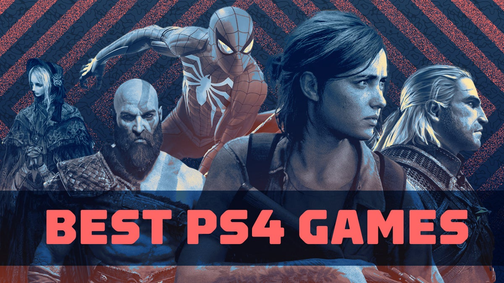
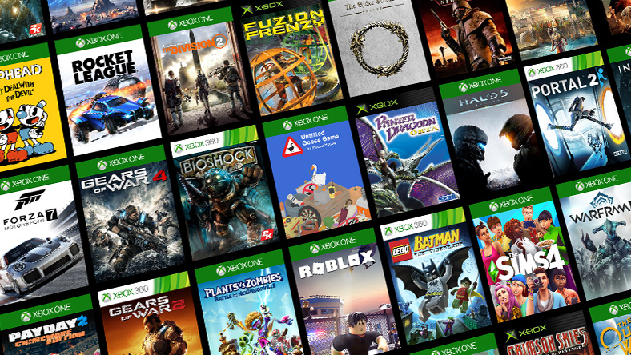
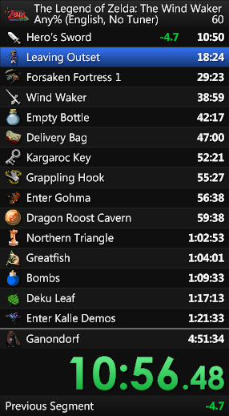

Whether you need help and tips when learning a new game, trying to speedrun a game, or wanting friends to enjoy a game with, online communities are the best way to get connected with other gamers.
The top gaming subreddit is r/gaming with over 19 million subscribers. This subreddit has everthing from cosplays, gaming news and videos, and many different types of gaming content.
The subreddits for ps4/ps5 gaming are r/ps4 andr/ps5 respectively. They offer a chance to talk with ps4 employees and see up-to-date news and discussions. For overall playstation news and support r/playstation is the place to go.
The subreddits for XboxOne/Xbox Series X gaming are r/XboxOne and Xbox Series X respectively. With just over 1 million subscribers, these are your hotspots for all things Xbox.
For people wanting to get into speedrunning and wanting to learn certain skips r/speedrun is an amazing subreddit to see your childhood games beat in a flash. You can learn how to beat your favorite games as fast as possible.